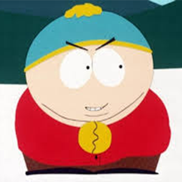
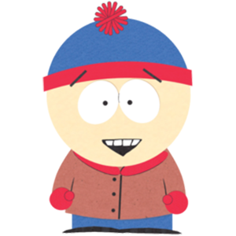
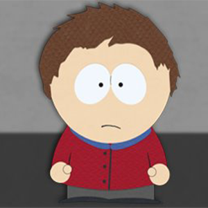
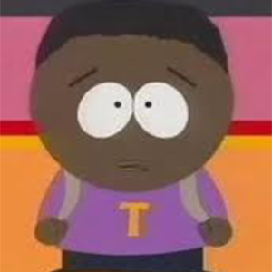
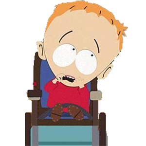
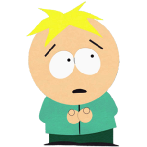
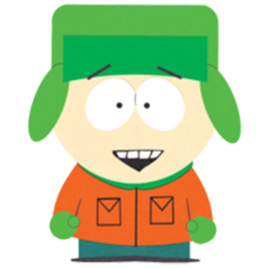
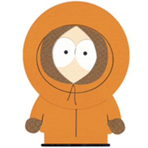
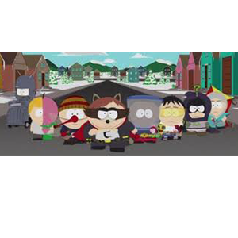

Le Coon : Eric Cartman
Eric Theodore Cartman, plus connu sous son nom Cartman, doublé par Christophe Lemoine dans la version française, est l'un des 5 personnages principaux et bien connus de South Park, avec Stan, Kyle ,Kenny, et plus tard, Butters.
Boîte à outils : Stan Marsh
Stanley "Stan" Randall Marsh, doublé par Thierry Wermuth en version française, est l'un des personnages principaux de South Park, avec Kyle Broflovski, Kenny, Cartman et Butters..
Le Moustique : Clyde Donovan
Clyde Donovan (initialement Clyde Goodman et Clyde Harris) est l'un des principaux camarades de classe des personnages principaux de la série.
Tupperware : Token Black
Token Black (initialement Token Williams) doublé par Adrien Beard dans la version originale, est l'un des principaux camarades de classe des héros.
Iron Maiden : Timmy Burch
Timmy Burch est un camarade de classe de Stan Marsh, Eric Cartman, Kyle Broflovski et Kenny McCormick. C'est un petit blond en chaise roulante électrique, qui n'arrive généralement qu'à dire son nom avec enthousiasme.
Praline-Menthe-Cerise : Butters Stotch
Leopold "Butters" Stotch, doublé par Christophe Lemoine en version française est un personnage dans la série télévisée d'animation South Park.
L'homme Cerf-Volant : Kyle Broflovski
Kyle Broflovski est un des personnages principaux de South Park. Il est doublé par Matt Stone dans la version originale et par William Coryn dans la version française. Kyle est un des quatre personnages principaux de South Park.
Mystérion :Kenny McCormick
Kenneth "Kenny" McCormick (parfois orthographié "McKormick"), est un personnage de la série télévisée américaine South Park. Il est doublé en français par William Coryn.
Le coon et sa bande
Le coon et sa bande et une association de supers-héros dirigée par le Coon.